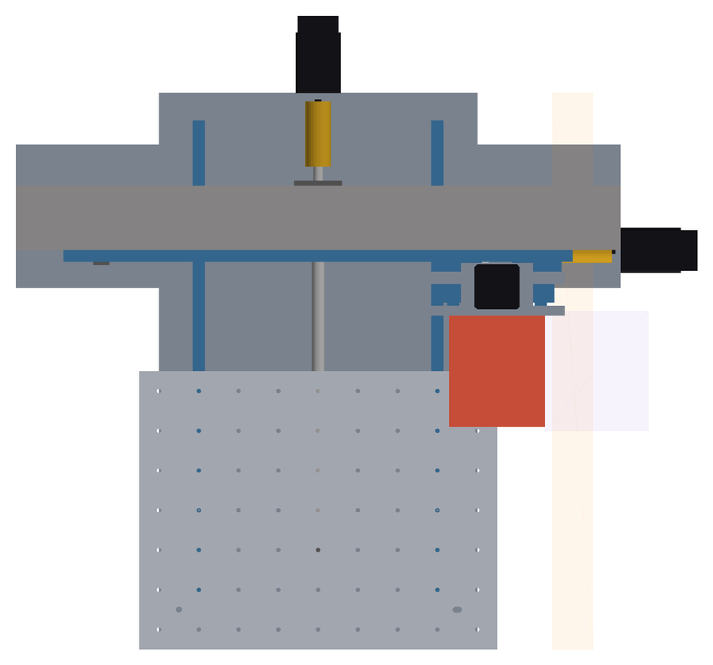
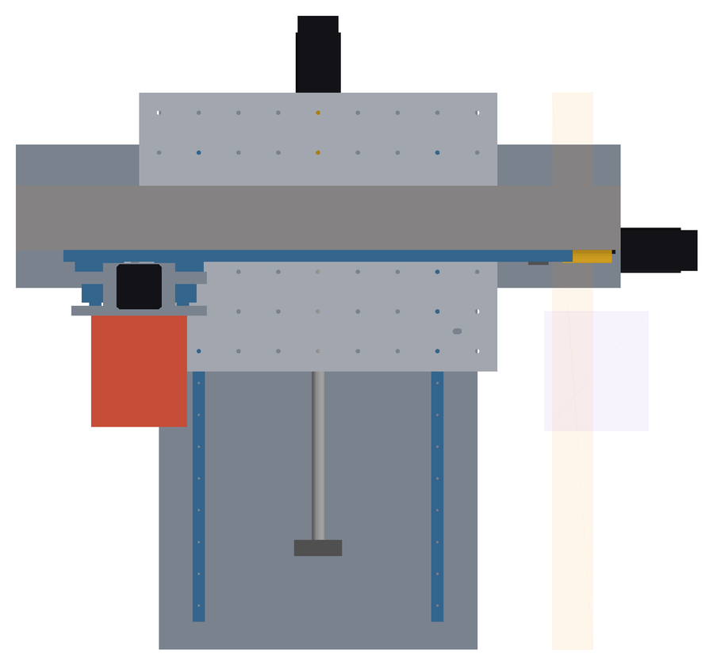

Digital mule
Standard.
Primo assieme parametrico della Standard: brutto ma dimensionalmente corretto. Tutte le quote vengono da tools/cad/standard_params.py; lo script costruisce l'assieme in HOME, CENTER e MAX, cerca collisioni e giochi, misura ingombri e masse e rigenera questa pagina.
Criteri di accettazione
| Criterio | Esito | Nota |
|---|---|---|
Un solo file di parametri tools/cad/standard_params.py | PASSA | |
Assieme tools/cad/standard_assembly.py | PASSA | |
| Guide, pattini, viti e motori dai modelli MultiCNC | PARZIALE | Stesse funzioni di parts.py che generano gli STEP; nell'assieme pattini e chiocciole sono istanziati a parte perché si muovono |
| Custom: basamento, spalle, trave, tavola Y, piastra Z (+ carrello X) | PASSA | |
| Datum MACHINE_ORIGIN, PALLET_R1/R2, TOOLDOCK_MASTER, DOCK_POSITION | PASSA | |
| Corse reali 450 × 350 × 140 con margini D019 ≥ 10 mm | PASSA | |
| X HGR15/HGH15CA, rotaia 640, interasse 110 | PASSA | |
| Y MGN15H, rotaia 630, SFU1605 centrale | PASSA | |
| Z HGR15/HGH15CA, rotaia 310, SFU1204 260 | PASSA | |
| Tavola 450 × 350 × 10, R1/R2, griglia 9 × 7 | PASSA | |
| Magazine solo come volume + DOCK_POSITION; niente cabina | PASSA | |
| STEP + bounding box + footprint + massa + collisioni, HOME/CENTER/MAX | PASSA | |
| Nessuna collisione nelle tre configurazioni | NON PASSA | |
| D015 verificata con i bracci reali a e b | NON PASSA | |
| Massa entro ±15% della BOM (32,8 kg) | NON PASSA |
Il braccio vero è 455,7 mm.
D015 aveva ipotizzato la punta a b = 180 mm sotto il centro delle guide X e a a = 80 mm dalla faccia trave. Nel mule, con Z tutto giù, b = 455,7 mm e a = 153 mm. Con interasse 110 mm la rigidezza minima per pattino sale da 88 a 522 N/µm: HGH15CA ZA (365) e ZB (483) non bastano. Con questo layout servirebbe un interasse di ~132 mm.
Causa: i pattini Z stanno sul carrello e devono restare sopra il fondo della slitta con Z in alto, quindi le guide X finiscono a 481,7 mm dal basamento. Rimedio da valutare nel mule v1: pattini Z sulla slitta e guide Z sul carrello, con la trave appena sopra pezzo e corsa Z: b ≈ 220–300 mm, k minimo ≈ 128–231 N/µm, entro ZA. Macchina anche più bassa.
50,5 kg, non 32,8.
| Riga BOM | Parte | BOM kg | Mule kg |
|---|---|---|---|
| MC-BAS-001 | Basamento lavorato | 3,5 | 13,2 |
| MC-GAN-002 | Spalle gantry | 2 | 3,7 |
| MC-GAN-001 | Trave gantry | 3,1 | 6 |
| MC-TBL-001 | Tavola Y / tooling plate | 2,9 | 3 |
| MC-Z-001 | Piastra asse Z | 0,6 | 1,8 |
| MC-TD-001 | Master kinematic plate | 0,6 | 0,7 |
Parti del mule che la BOM non ha ancora: x_pads 0 kg · x_motor_plate 0,1 kg · y_nut_bracket 0,1 kg · x_carriage 1,5 kg · x_nut_bracket 0,1 kg · z_motor_bracket 0,1 kg · z_nut_tab 0,1 kg. Parti commerciali ed elettronica con le masse della BOM. Il basamento è la differenza principale: un guscio da 8 mm con pareti da 8 mm, a T per portare le spalle, pesa molto più dei 3,5 kg stimati.
La slitta invade il magazine.
In MAX (X = 450, Z giù) la slitta Z, larga 170 mm contro i 110 mm della testa, entra nel volume riservato al magazine a destra della posizione di docking. Il magazine deve stare oltre x ≈ 540 mm, oppure la slitta deve restringersi in basso. Con il docking fuori corsa (x = 580) servirebbero 130 mm di corsa X in più.
Motori a sbalzo.
Inviluppo X -155 … 702, Y -350 … 447, Z -60 … 943,7 mm. Il motore X sporge oltre la trave e il motore Y oltre il basamento di circa 97 mm ciascuno; il motore Z sul carrello porta l'altezza a 1.003,7 mm. La cabina (D025) dovrà contenere questo volume o i motori dovranno essere ripiegati.
Configurazioni
| Config | Assi | Collisioni | Giochi < 3 mm | Margine pattini-rotaie (mm) | Chiocciola-supporti (mm) | Assieme |
|---|---|---|---|---|---|---|
| HOME | X 0 Y 0 Z 0 | nessuna | z_bf ↔ z_slide · 2 mm | X 14,3 · Y 10,6 · Z 10 | X 4,5 · Y 18,5 · Z 19 | STEP ↓ |
| CENTER | X 225 Y 175 Z -70 | nessuna | z_bf ↔ z_slide · 2 mm | X 239,3 · Y 185,6 · Z 80 | X 229,5 · Y 179,5 · Z 73 | STEP ↓ |
| MAX | X 450 Y 350 Z -140 | magazine_volume ↔ z_slide · 18.125 mm³ | magazine_volume ↔ tooldock_master · 0 mm z_bf ↔ z_slide · 2 mm | X 14,3 · Y 10,6 · Z 18,6 | X 18,5 · Y 4,5 · Z 3 | STEP ↓ |
Collisione = volume comune > 1 mm³. Giochi controllati solo tra parti in moto relativo, escluse le coppie che si toccano per progetto (guida-pattino, vite-chiocciola, vite-foro, punta-tavola a Z giù). Volumi riservati (catene, magazine, testa) inclusi nel controllo.
Viste di controllo




Riferimenti.
| Datum | x, y, z (mm) |
|---|---|
MACHINE_ORIGIN | 0, 0, 26 |
PALLET_R1 | 50, 50, 26 |
PALLET_R2 | 400, 50, 26 |
TOOLDOCK_MASTER | 0, 0, 386 |
DOCK_POSITION | 450, 0, 386 |
TOOL_TIP | 0, 0, 166 |
Sistema macchina: z = 0 sul piano del basamento, asse utensile sempre su y = 0 (ponte fisso). PALLET_R1/R2 si muovono con la tavola; TOOLDOCK_MASTER con la slitta Z.
Un comando.
python tools/cad/standard_assembly.py (CadQuery) riscrive STEP, cad/standard/report.json e questa pagina; python tools/cad/render_views.py rigenera le viste. Ogni quota si cambia solo in standard_params.py.